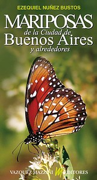
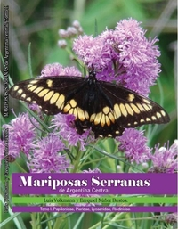
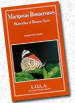

|
fotos de animales silvestres de
ARGENTINA |
 |
|
www.fotosaves.com.ar - Alec Earnshaw |
|||
photos of wild animals of ARGENTINA |
|||
Fotos de algunos insectos de Argentina / Photos of some insects of Argentina
CLASE INSECTA Insectos - Insects |
ORDEN / ORDER: LEPIDOPTERA Mariposas y polillas - Butterflies & moths |
Agradezco
a Gustavo Canals, Roberto Güller y Ezequiel Nuñez Bustos
por su colaboración en la identificación de especies.
Many thanks to Gustavo Canals, Roberto Güller
and Ezequiel Nuñez Bustos for helping with species identification.
See also reference website on Lepidoptera:
Lepidoptera
and some other life forms by
Markku Savela
|
Familia (termina en: ...dae) - Subfamilia ( ...nae) - Tribu ( ...ini) - Genero especie raza Ejemplo: Nymphalidae - Nymphalinae - Kallimini - Junonia genoveva hilaris |
|
|
En Argentina viven
más de 1.000 especies diferentes de mariposas diurnas, y quizás
unas 10.000 especies de nocturnas ("polillas").
Debido a que muchas especies son absolutamente dependientes de la existencia
de ciertas y específicas plantas silvestres - las cuales
hoy estan
sucumbiendo
rápidamente
por el arado, el desmonte y la transformación de los humedales
- hace que muchas
especies de nuestras mariposas enfrentan hoy serios problemas de conservación
(es decir, se acercan a la extinción).
Este sitio contiene apenas una pequeña muestra de las muchas
especies que viven en Argentina.
Estan mejor representadas las especies que viven en los alrededores de Buenos Aires, una buena muestra de las especies
de Misiones y Jujuy, y algunas especies del Chaco y la Patagonia.
Argentina has over 1,000 different species
of butterflies and perhaps 10,000 different moth species.
Many species are entirely dependant on the presence of certain wild
plants, which today are quickly vanishing
due to agriculture, the clearing of forests and the transformation of
wetlands. As a result many butterfly
species
could now be facing conservation problems.
This site contains a sampling of the many butterfly species that are found in
Argentina, focalizing mainly on the
species that can be seen around Buenos Aires, Misiones and Jujuy, as well as some from the Chaco and Patagonian regions.
|
PULSA EN LAS FOTOS PARA IR A LAS ESPECIES - -
CLICK ON PHOTOS TO SEE THE SPECIES
|
|||
|
Marcá
sobre la foto
Click on the images |
Familias |
Nº
de fotos
# of photos |
Nº
de especies
# of species shown |
|
HESPERIOIDEA
|
|||
|
134
|
52
|
||
|
PAPILIONOIDEA
|
|||
|
22
|
7
|
||
|
70
|
24
|
||
|
56
|
22
|
||
|
49
|
14
|
||
|
317
|
118
|
||
 |
100
|
61
|
|
|
TOTAL:
|
748
|
298
|
|
|
Butterfly
special |
|
Clasificación taxonómica
La enorme diversidad de formas (especies) de seres vivos, a veces muy similares entre si, hace que no siempre sea tarea sencilla su clasificación en grupos claramente definidos. Muchas veces los criterios elegidos a priori por los hombres de ciencia de antaño para agruparlos en grupos taxonómicos chocan contra las multitudes de excepciones presentes en la naturaleza. Por ello frecuentemente existen diversas corrientes de estudio que arriban a resultados alternativos. Pero con el tiempo los estudios de biólogos dedicados a cada rama del árbol de la vida, junto a la aplicación de tecnologías nuevas como el ADN, estan logrando conocer mejor las conexiones o parentescos entre especies (conocido como filogenia), y de allí surgen cambios en la taxonomía, que se van reflejando gradualmente y con creciente precisión en las sucesivamente publicaciones. |
|
Guías
de identificación de mariposas de Argentina |
|||
|
Mariposas
de la Ciudad de Buenos Aires |
 |
||
| Para
conocer y disfrutar de todas las mariposas que vuelan en las reservas
urbanas y áreas silvestres de la zona. Describe con lenguaje accesible y rigor científico las características de 155 especies. Más de 1.000 fotografías color Incluye una guía de plantas que atraen mariposas, consejos de cría y cómo crear un jardín de mariposas. 264 páginas color. Tamaño: 12 x 23 cm Papel ilustración brillante. |
|||
|
|
|||
|
Mariposas
Serranas
de Argentina Central (Butterflies of the hills of central Argentina) por Luis Volkmann & Ezequiel Nuñez Bustos Tomo I: Papilionidae, Pieridae. Lycaenidae y Riodinidae - 1ª Edición: junio 2010 Se consigue unicamente contactando a los autores. En Buenos Aires puede contactar a E. Nuñez Bustos por email o al celular 1551405919. Próximamente se publicará el Tomo II, abarcando Nymphalidae & Hesperiidae |
 |
||
|
|
|||
|
Ezequiel Nuñez Bustos |
Luis Volkmann |
Leer
más acerca de los autores
(Read about the authors - in Spanish) |
|
|
|
|||
|
"Mariposas
Bonaerenses" por Gustavo Canals Con
esta guía en mano te permitira ingresar al mundo fascinante
de las mariposas a traves de la observación de ejemplares
vivos
en la naturaleza. Muchas seguramente frecuentan tu jardín
o tu casa de campo, y ni siquiera estas enterado! Aprenderás
a identificarlas, y a valorar el mundo silvestre que aún
subsiste a nuestro alrededor. Abarca 140 especies. En Bs Aires se
consigue en las librerías indicadas más abajo. Publicada
en el año 2000, por lo cual ya ha quedado algo desactulalizada
la clasificación taxonómica.. |
 |
||
{kind=link}
{kind=link}
{kind=link}